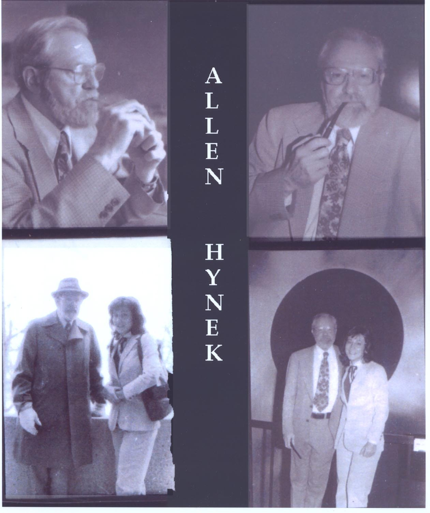

Elle obtient une maîtrise en "éducation".

En , après avoir visionné le film Rencontres du 3e Type, elle se met à écrire des articles sur les phénomènes associés aux extraterrestres, et rencontre Josef Allen Hynek. Ce dernier lui demande de faire des traductions en italiens de rapports d'observations du CUFOS. Elle l'assiste ainsi de à jusque , le suivant dans certaines de ses enquêtes, devenant photo-journaliste.
En , elle rencontre Philip J. Corso, dont elle participera à publier le livre "Le jour après Roswell", dont elle écrit la préface en italien comme en anglais.
Elle interroge aussi Michael Wolf, Maurizio Cavallo.
Harris travaille écrit ensuite une chronique pour Area 51 UFO magazine et, convaincue de l'origine extraterrestre d'ovnis, intègre le mouvement Exopolitics.
Elle vit actuellement à Rome (Italie) et Boulder (Colorado).